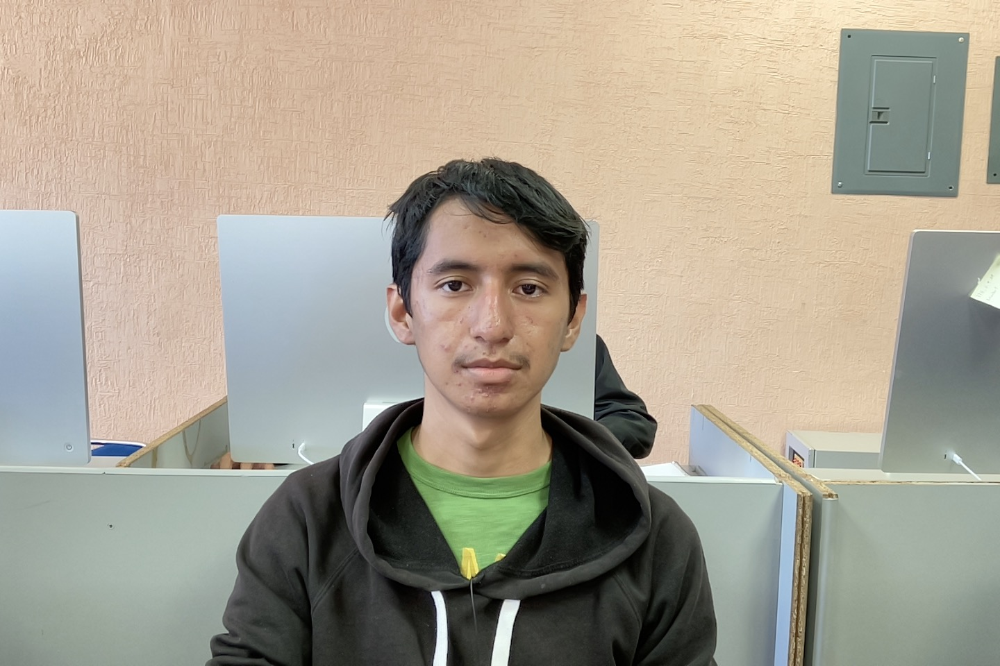

Soy Daniel, una persona que se le dificulta algunas cosas, puedo ser alguien de confianza si me respetan y de la misma manera yo los respeto, puedo ser una persona fácil de convencer y si me comprometo en algo, tratare de cumplir el compromiso.
Provengo de la comunidad de tlacotlapilco de la comunidad de Chilcuautla del estado de hidalgo, es un pueblo donde la mayoría se apoya de unos a otros algunas veces, donde se especializan en el comercio y atracción turística de las áreas acuáticas.
Me convencieron unos amigos en estudiar esta carrera y tras ver cuáles son los beneficios al terminar el estudio de las Tics, decidí entrar a esta carrera tanto por los beneficios que se ofrecen y por la situación económica que diariamente paso con mi familia.